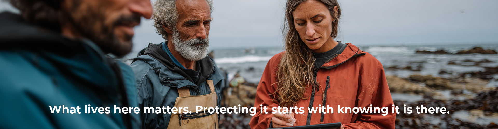
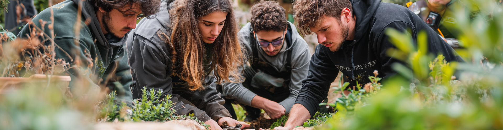

Organisation Overview
| Organisation type | Local wildlife and conservation charity |
| Team size | Two people (conservation lead + comms coordinator) |
| Volunteers | 25 field volunteers, 15 community champions |
| Funding | Grants, community fundraising and some corporate partners |
This wildlife conservation charity scenario is a practical movement marketing strategy example, showing how a small two-person team applied the Alderney model to community-led conservation marketing.
Instead of running disconnected campaigns, the charity focused its activity around a single belief: 'What lives here matters'. The 30-day plan demonstrates how authentic brand marketing for charities starts with an honest audit of what already exists, not what you wish you had.
The Belief

This scenario mirrors how Alderney ran stakeholder workshops to discover what the island really stood for, then reduced 13 scattered programmes down to six focused strands.
30 Day Movement Marketing Plan
- Run a 60-minute 'Where is the Energy?' session with eight to ten core volunteers and two community partners.
- Use the Movement Potential Audit template.
- Map four things: people (who already care?), stories (what proof do we have?), partners (who are already aligned?), habits (what repeatable behaviour exists, such as beach cleans, species counts or school visits?).
- Output: completed one-page audit.
- Run the Authenticity and Issue Fit Check.
- For each potential movement claim, test: can we prove this with evidence we already have?
- Is this genuinely ours to champion?
- What could go wrong if we overstate?
- Output: completed one-page fit check with go, adjust or stop signals.
- Based on the audit, choose your six niche strands (your Alderney equivalent).
- Example set: species spotlight, volunteer pride, school sessions, landowner partnerships, river health updates, join in actions.
- Define one sentence everyone can repeat: 'What lives here matters and we are the people who show up to protect it'.
- Identify your two strongest niches from the audit (for example, school sessions and river clean-ups, wherever energy scored highest).
- Collect eight short proof stories: four from volunteers ('why I show up') and four from community participants ('what surprised me'). (Audio or written, consent-led).
- Create a Wildlife Pocket Guide in three formats (print, PDF and three-minute audio).
- Feature ten local species, where to find them and what the charity does to protect them. This becomes a reusable asset that partners can distribute.
- Host a Wild Walk. Guided 90-minute nature walk at your best site.
- Mix two groups that rarely overlap: regular volunteers and local business owners or school parents. Limit 20 people.
- Capture ten participant reflections: 'I did not know this was here' or 'I will bring my children back'.
- Publish as a weekly story thread.
- Ask every attendee to choose one action: donate, volunteer, share or attend next month.
What Good Looks Like by Day 30
Why This Saves You Money and Still Grows
How This Gets You More Donors
Tracking: Non-Negotiable
How a 30 Day Plan Becomes a Movement

A 30-day plan becomes a movement when protecting what lives here becomes a community identity and a repeatable habit (walks, clean-ups, species counts) that people invite others into. For charities, this builds donor resilience because supporters share, show up and advocate, not only give.